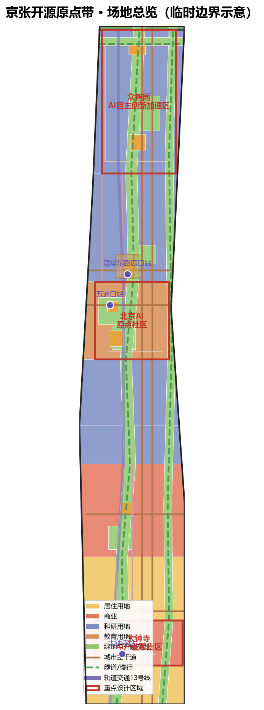
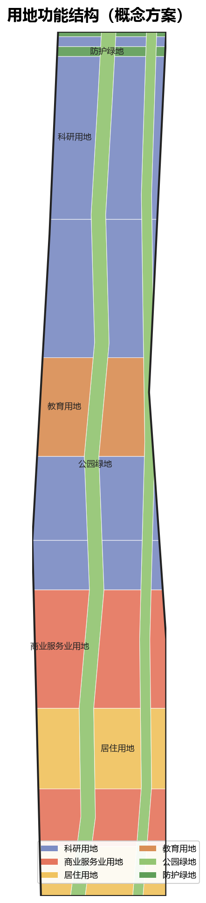
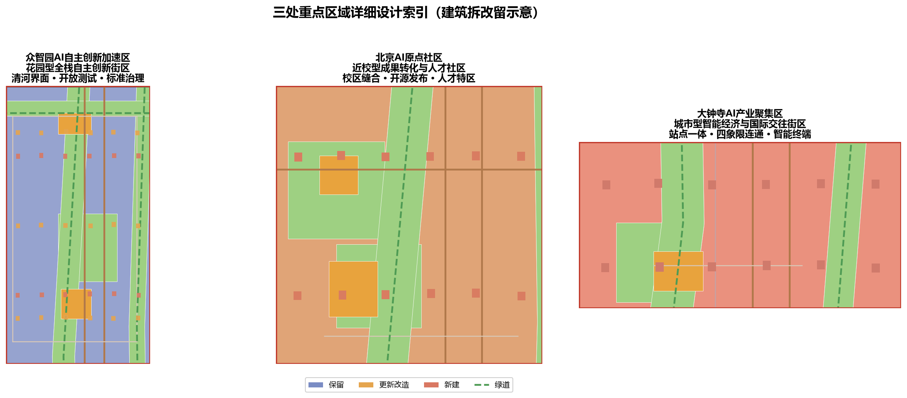
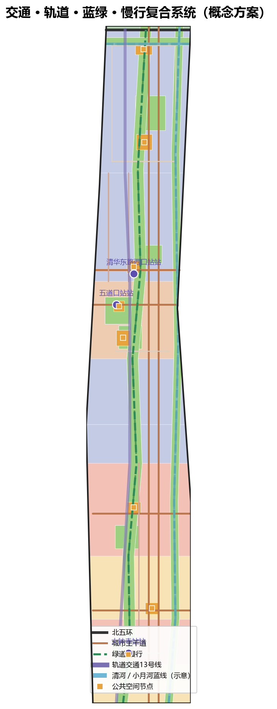
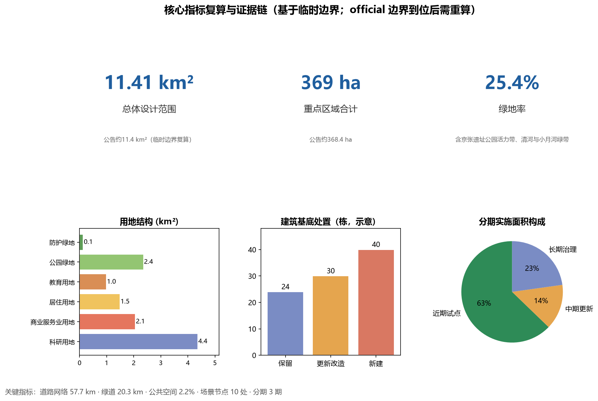

京张开源原点带：从人字形铁路到开源AI的城市操作系统
京张开源原点带：从人字形铁路到开源AI的城市操作系统
设计依据与资料清单
本 formal 方案以北京市规划和自然资源委员会海淀分局发布的《百年京张AI创新带城市设计国际方案征集资格预审公告》为第一依据，并以 `brief/site-package/` 中经维护者登记的临时粗略边界、重点区域、枚举、指标和来源清单为机器可读依据。AI agent 在生成方案前读取了 `design_brief.json`、`allowed_design_space.json`、`sources.json`、`enums/`、`ranges/`、`schemas/`、`data/source_registry.json` 和 `data/processed/agent_fact_pack.md`，并用 `project_scope_summary.csv`、`agent_task_requirements.csv`、`source_use_matrix.csv`、`missing_data_checklist.csv` 建立任务、范围、资料用途和缺口清单。公告要求方案达到控制性详细规划的城市设计深度和规划综合实施方案的城市设计深度，因此本方案的全部空间结论均由可复算的 GeoJSON 图层、指标表、A3 文册、A0 展板和 HTML 电子展示成果支撑，不以文本叙述替代图纸与数据。
方案不是独立愿景文本，而是从公告、面向智能体任务书和场地资料出发组织成果；本节只把最关键依据放在判断旁边 [source:OFFICIAL-ANNOUNCEMENT] [source:AGENT-TASKBOOK] [depth:existing_conditions_diagnosis]。完整来源和标准覆盖分别保存在 `sources.json`、`standard_matrix.json` 与 `design_depth_matrix.json`。
资料登记表的使用边界如下 [source:SOURCE-REGISTRY]：
- data/source_registry.json 登记公开、清权与临时资料的用途边界。
- 当前登记摘要：formal 可用资料 7 条，背景资料 1 条，provisional-only 资料 1 条。
- agent 不得把 background_only 或 provisional_only 资料升级为 official boundary、法定控规、正式评分依据或政府实施承诺。
`data/processed/agent_fact_pack.md` 是本方案的阅读导航层，不是新的权威来源 [source:PROCESSED-FACT-PACK]。它帮助 agent 把三层范围、三处重点区、公告任务、agent.1-agent.6、资料可用性和缺资料事项组织成可读方案；事实判断仍需回到已登记的原始材料 [source:OFFICIAL-ANNOUNCEMENT] [source:AGENT-TASKBOOK]。

本方案在官方 `SITE_BOUNDARY` 或三处 `KEY_AREA` 精确多边形尚未公开时，使用 `brief/site-package/geometry/provisional_boundaries.geojson` 生成临时 formal 包。提交包中的 `geometry/site_boundary.geojson` 与 `geometry/key_areas.geojson` 均标注为 `provisional_constraint`、`official_boundary=false`，只能用于方案生成、自检、可视化和设计讨论，不能作为 official redline、审批依据、精确面积依据或法定控制结论。该组织方数据缺口本身不阻断内容评分；替换 official polygons 后，site boundary、key areas、land use、roads、green space、public space、buildings、phasing 和 metrics 均需重算。
本次提交的可评分状态为：临时边界，保留精度警示并待正式数据发布后复算；不阻断内容评分。因此，正文中的空间结构、场景、项目和指标均按“可讨论、可复核、可替换官方边界后重算”的原则写入；当官方边界和重点区 polygon 更新后，agent 必须重新运行脚手架、自检和图纸/HTML 生成，不能只替换单个文件。
边界解释可回到总体范围图层和面积复算 [data:geometry/site_boundary.geojson#SITE-001] [metric:site_area_sqm]。三处重点区则由独立图层和数量指标核对 [data:geometry/key_areas.geojson#PROV-KEY-001] [metric:key_area_count]。
三层范围工作框架
方案按照公告确定的三个层次组织工作：统筹研究范围关注 43.6 平方公里的AI产业生态、战略定位、创新链和未来城市形态；总体设计范围关注 11.4 平方公里京张遗址公园周边 1-2 公里城市地区和产业区，要求形成城市更新总体框架、产业空间布局、交通市政支撑和城市风貌控制；重点区域范围关注 368.4 公顷三处详细设计地区，要求明确功能业态、建筑规模、拆改留分类、公共空间连通和交通组织。三层范围在 `compliance_matrix.json` 中逐条映射，保证公告 1.3、1.4、1.5 与 agent.1-agent.6 的必选任务都有章节、图层、指标、图纸和 HTML 证据。
三层工作框架的深度项由 [depth:three_level_scope_framework] 和 [depth:overall_spatial_structure] 约束，空间证据以 [data:geometry/site_boundary.geojson#SITE-001] 与 [data:geometry/key_areas.geojson#PROV-KEY-001] 为准，任务依据以 [standard:PROJECT-OFFICIAL-ANNOUNCEMENT] 为准。

三层工作不是互相割裂的图纸集合。统筹研究决定产业链和城市形态判断，总体设计把判断落实到更新项目、空间结构和设施承载，重点区域详细设计验证具体地块、建筑、交通、公共空间和AI应用场景的可实施性。
本方案建议的总体概念为 “京张开源原点带：从人字形铁路到开源AI的城市操作系统”。核心叙事采用“开源 + 分支”隐喻：1909 年詹天佑以“人字形铁路”突破八达岭大坡道，是中国工程师第一次以自主方案解决国家级工程难题，堪称近代中国的“开源时刻”；今天，全球 AI 创新以“提交（commit）、分支（branch）、合并（merge）”组织协作。京张创新带因此被组织为一个“城市操作系统”：京张遗址公园活力带是主干（main），承载百年铁路遗产与公共生活；三处重点区域是三个特性分支——众智园（全栈自主创新分支）、北京AI原点社区（origin/main，开源策源分支）、大钟寺（智能经济分支）；两翼是贡献者社区——中关村科技服务翼、小月河场景赋能翼；AI 场景节点是一次次“提交”，通过公共空间、活动与运营机制不断合并进主干。这一隐喻把三条赛道（京张文化遗产、AI原点社区、青年友好公共空间）统一为同一套可体验的空间叙事：文化遗产不是静态展陈，而是开放、可提交、可演化的“开源仓库”。
“一带”不是额外画出的新红线，而是把公告中的三层范围转译为工作方法；“三核”对应三处重点区域；“两翼”对应任务书中的中关村科技服务翼与小月河场景赋能翼；“多点场景”对应 AI+公共服务、产业服务和城市生活的可运营节点；“复合环”对应慢行、绿地、公共空间和活动路线的联动。
| 层级 | 设计问题 | 方案回答 | 数据落点 |
|---|---|---|---|
| 统筹研究范围 | AI产业生态和未来城市形态如何组织 | 建立“高校策源-开源协作-企业转化-公共体验-国际传播”的创新链 | compliance_matrix.json、standard_matrix.json |
| 总体设计范围 | 产业空间、城市更新、交通市政和风貌如何落图 | 用地、建筑、道路、绿地、公共空间和分期图层共同表达 | [data:geometry/land_use.geojson#LU-001]、[data:geometry/roads.geojson#ROAD-001] |
| 重点区域范围 | 三处片区如何达到详细设计深度 | 分别提出定位、空间动作、AI场景和实施依赖 | [data:geometry/key_areas.geojson#PROV-KEY-001]、[data:geometry/key_areas.geojson#PROV-KEY-002]、[data:geometry/key_areas.geojson#PROV-KEY-003] |
统筹研究范围产业与未来城市研究
统筹研究范围的核心任务是构建世界级 AI 创新生态体系。本方案以“高校策源-开源协作-企业转化-公共体验-国际传播”五段式创新链组织产业空间：清华大学等高校院所承担策源（教育用地 0804，位于原点社区西侧与清华东路沿线）；开源社区、孵化器与开发者生态承担协作（科研用地 0802 的社区化组织）；头部企业与智能终端厂商承担转化（大钟寺片区商业与产业空间）；京张遗址公园与公共广场承担公共体验（文化叙事与场景节点）；国际路演与品牌活动承担传播（大钟寺国际路演客厅与全球AI活动周路线）。这一创新链同时回应任务书“五大功能”中 AI全栈自主创新体系、世界级AI创新生态、AI+场景赋能新范式、智能化AI活力城市与AI治理全球话语权的要求 [source:AGENT-TASKBOOK]。
“三区两翼”协同是本层研究的空间骨架 [source:AGENT-TASKBOOK]：三区即众智园AI自主创新加速区、北京AI原点社区、大钟寺AI产业集聚区；两翼即中关村科技服务翼（西部，承担要素全球化配置、中关村IP与资本赋能）与小月河场景赋能翼（东部，承担AI场景赋能与智能化AI活力城市）。在本方案中，两翼不是另画边界，而是总体设计范围内东西两侧的功能走廊：西部依托学院路—中关村方向的科技服务资源组织“服务翼”节点，东部依托小月河滨水带组织“场景翼”节点，二者通过横向慢行连接与京张主干带相交。
命名与视觉识别建议（概念建议，供专业团队深化）：“京张开源原点带”命名系统包含三个层面——主轴“京张主线 JZ-Main”，象征遗产与公共生活的主干；三核“开源分支 Open Branch”（众智园为 Full-stack，原点社区为 Origin，大钟寺为 Commerce）；活动与场景统一为“提交 Commit”系列（如“开源之夜 Open Night”“提交节 Commit Fest”）。Logo 概念采用“人字形铁路线与 git 分支线同构”的图形：两条线在清华园车站处交汇后分叉，既是铁轨也是分支拓扑。所有品牌元素均为概念草案，正式使用前需完成清权与专业设计。
未来城市形态研究：AI 将改变工作、生活、社交、学习、交通和公共服务。方案把 AI 交通系统（轨道站点一体化、慢行导航、低速接驳试点）、连续绿色空间（京张公园+清河+小月河）、创新服务设施（发布厅、路演客厅、沙盒展示）和国际化生活工作氛围落实为可定位的功能区、节点、廊道和场景 [depth:overall_spatial_structure]。产业战略指标、AI创新指数、人才密度、空间供给类型和AI+垂直应用重点区域写入 `metrics.json` 指标体系，并标明哪些是官方、哪些是设计建议、哪些仍待正式数据校准。若提出全球AI创新活动、开发者社区、开放场景或朝圣路线，均写为“概念建议/参考方案/可供专业团队深化研究”，不写成已经确定的政府活动或实施安排。
总体设计范围城市更新与控规深度城市设计
总体设计范围要求达到控制性详细规划的城市设计深度。本方案以“主线缝合、分支生长、提交留白”为更新总体框架：
- 主线缝合：京张遗址公园活力带存在多处慢行断点（跨北五环节点、跨北三环桥下空间、站点周边接驳缺口），更新策略以“缝合”为主，目标是形成连续 20.7 km 的绿道-慢行系统（[metric:greenway_length_m]，绿道包含京张公园主轴、小月河骑行道与清河滨水步道）。
- 分支生长：三处重点区域各自围绕核心项目生长，避免均质化开发；重点区内新建建筑以“可提交、可复盘”的小街区模块组织，预留功能迭代空间。
- 提交留白：沿主线保留若干小型留白用地（广场、口袋公园、临时活动场地），作为 AI 场景与社区活动的“暂存区（staging area）”，待运营验证后再固化功能，呼应开源软件的灰度发布逻辑。
`geometry/land_use.geojson` 完整覆盖设计边界且无重叠（35 个地块，缝隙面积 0 m²，见 `generated_metrics.json`），表达用地结构 [data:geometry/land_use.geojson#LU-001]；`geometry/buildings.geojson` 表达更新建筑基底（94 栋，含保留/更新/新建三类，见 [data:geometry/buildings.geojson#BLDG-001] 与 [metric:building_count]）；`geometry/roads.geojson` 表达微循环、慢行和轨道接驳关系 [data:geometry/roads.geojson#ROAD-001]；`metrics.json` 复算核心面积、比例和图层数量。
用地结构（基于临时边界复算，official 边界到位后重算）：科研用地 4.35 km²、商业服务业用地 2.05 km²、居住用地 1.49 km²、教育用地 0.99 km²、公园绿地 2.35 km²、防护绿地 0.16 km²，绿地率 25.8%，公共空间率 2.2%（[metric:green_ratio] [metric:public_space_ratio]）。科研与教育用地合计占可建设用地比重过半，与“AI创新带”的产业定位一致；绿地与开敞空间以京张公园主轴为核心骨架，形成南北贯通的生态-文化复合廊道 [depth:land_use_layout] [depth:development_intensity_controls]。
总体设计必须支撑交通、轨道、市政和配套设施。本方案围绕轨道站点一体化（五道口站、清华东路西口站、大钟寺站）、道路微循环（众智园环路、原点社区慢行主街、大钟寺站前路）、非机动车停放、停车供给、创新服务平台、人才生活服务、新型基础设施、分布式能源和端侧算力提出空间布局和实施路径。涉及建筑高度、开发强度、道路红线、退线和设施标准的内容，因尚无官方控制条件，统一写为“待正式控规条件确认”，不以 agent 推测值冒充审定指标（见 `assumptions.json` A-CONTROLS-001）。
重点区域详细设计
重点区域详细设计是必选项。三处重点区域在 `geometry/key_areas.geojson` 中分别对应 PROV-KEY-001/002/003，均为 provisional_constraint；设计表达包含功能业态、建筑规模、建筑形态、拆改留分类、公共空间系统、交通组织、慢行连通和实施项目 [depth:three_key_area_detailed_design]。

众智园AI自主创新加速区（PROV-KEY-001，约 192.0 ha）
定位：花园型全栈自主创新街区——AI 治理与全栈自主创新的“展示分支”。- 功能业态：以科研用地为主体，植入产业展示、标准治理工作坊、安全评测展示、低碳算力体验、开放测试场；沿清河界面布置科创亲水平台与创新交往空间 [data:geometry/key_areas.geojson#PROV-KEY-001]。
- 空间动作：强化清河界面（防护绿地 0.16 km² 的北侧边界），组织众智园环路（[data:geometry/roads.geojson#ROAD-011]），围绕“众智园创新绿核”形成园中园结构（[data:geometry/green_space.geojson#GREEN-004]）；产业展示广场作为门户节点（[data:geometry/public_space.geojson#PUBLIC-004]）。
- 拆改留：以更新改造与新建为主（建筑基底见 [data:geometry/buildings.geojson#BLDG-001] 中 BLDG-001/002 序列），保留具有产业记忆的标志性厂房/园区界面，新增建筑控制在中低强度，确保清河界面的景观通透性。
- AI 场景：自主模型测试沙盒（安全治理展示）、标准制定工作坊、低碳算力体验点、清河低碳创新廊（[data:geometry/green_space.geojson#GREEN-004] 与 PUBLIC-008 结合）。
- 实施依赖：河道蓝线复核、生态与防洪条件、五环路与对外交通组织（见 `assumptions.json`）。
北京AI原点社区（PROV-KEY-002，约 103.8 ha）
定位：近校型成果转化与人才社区——“origin/main”，开源策源分支。- 功能业态：面向高校成果转化，组织孵化、展示、法务、知识产权、投融资服务；配建人才公寓与青年居住（居住与教育用地混合）；开设开源发布厅、贡献墙、公共代码墙等开源文化设施。
- 空间动作：以“原点社区慢行主街”（[data:geometry/roads.geojson#ROAD-012]）缝合校区、园区、街区；围绕“原点社区开源发布广场”（[data:geometry/public_space.geojson#PUBLIC-005]）与“原点社区林荫广场带”（[data:geometry/green_space.geojson#GREEN-006]）组织社区公共生活；清华东路西口站一体化范围（[data:geometry/constraints.geojson#CONSTRAINT-004]）作为轨道接驳锚点。
- 拆改留：以保留与更新为主（BLDG-003/004/005 序列），保留高校周边低层肌理与院落尺度，更新首层业态为创新服务界面。
- AI 场景：开源发布厅、近校成果转化街、贡献墙/荣誉展示、人才特区服务驿站、AI 教育体验点（与清华园车站文化广场联动，[data:geometry/public_space.geojson#PUBLIC-001]）。
- 实施依赖：校区边界与权属、首层业态转换许可、轨道站点一体化边界核定（见 `assumptions.json`）。
大钟寺AI产业聚集区（PROV-KEY-003，约 71.6 ha）
定位：城市型智能经济与国际交往街区——“commerce 分支”。- 功能业态：围绕领军企业、智能体、智能终端、内容消费、数据要素、数字资产与商业服务组织产业空间；商业服务业用地为主要载体（[data:geometry/land_use.geojson#LU-005] 及周边）。
- 空间动作：大钟寺站四象限步行连通（[data:geometry/constraints.geojson#CONSTRAINT-002] 与 [data:geometry/public_space.geojson#PUBLIC-003] 联动），规划绿地复合利用，站前路（[data:geometry/roads.geojson#ROAD-013]）作为东西向步行主街；北三环桥下空间转化为青年活力空间（[data:geometry/public_space.geojson#PUBLIC-007]）。
- 拆改留：保留与新建并重（BLDG-006/007 序列），更新临街界面与公共环境，新建建筑强化站点周边 TOD 强度梯度。
- AI 场景：大钟寺国际路演客厅、智能体与智能终端展示、数据要素会客厅、青年夜间活力街区。
- 实施依赖：轨道站点红线与一体化方案、道路交叉口改造、市政管线条件（见 `assumptions.json`）。
| 重点片区 | 设计定位 | 空间动作 | AI产业与运营场景 | 证据引用 |
|---|---|---|---|---|
| 众智园AI自主创新加速区 | 花园型全栈自主创新街区 | 强化清河界面、产业展示、低碳创新交往和对外交通组织 | 自主模型测试、标准制定工作坊、安全治理展示、低碳算力体验 | [data:geometry/key_areas.geojson#PROV-KEY-001]、[depth:three_key_area_detailed_design] |
| 北京AI原点社区 | 近校型成果转化与人才社区 | 组织校区、园区、街区慢行缝合；补足成果发布、人才服务、居住生活和开源协作空间 | 开源社区、成果发布、人才特区服务、近校孵化 | [data:geometry/key_areas.geojson#PROV-KEY-002]、[source:AGENT-TASKBOOK] |
| 大钟寺AI产业聚集区 | 城市型智能经济与国际交往街区 | 围绕大钟寺站一体化、四象限步行连通、商业服务和重点企业公共环境更新 | 智能体与智能终端展示、内容消费、数据要素与国际路演 | [data:geometry/key_areas.geojson#PROV-KEY-003]、[metric:key_area_count] |
AI 创新生态、人才画像与 AI+ 场景
方案建立面向 AI 人才和企业的空间需求画像，覆盖研发办公、开源协作、成果发布、企业服务、人才居住、社交学习、消费生活、运动休闲和国际交往 [depth:scenario_evidence]。AI+场景围绕公告提出的交通、服务、消费、医疗、教育、法律、生活服务等方向，形成产业发展场景和 AI 赋能城市功能场景。每个场景均说明服务对象、空间位置、数据来源、隐私边界、人工复核机制和运营主体，并进入结构化图层或合规矩阵。
AI 场景全部落到空间和治理边界：公共空间场景引用 [data:geometry/public_space.geojson#PUBLIC-001]，慢行与交通场景引用 [data:geometry/roads.geojson#ROAD-001]，开放空间场景引用 [data:geometry/green_space.geojson#GREEN-001] 和 [metric:public_space_ratio]、[metric:green_ratio]。场景节点数量（10 处）写入指标体系 [metric:scenario_node_count]。
| 用户画像 | 典型需求 | 空间响应 | 自检边界 |
|---|---|---|---|
| 开源开发者 | 发布、协作、测试、社区声誉 | 原点社区开源发布厅、公共代码墙、夜间协作空间 | 不采集个人行为轨迹；活动数据只做聚合统计 |
| 初创团队 | 低成本办公、算力入口、产品试验场 | 众智园共享测试场、端侧算力服务点、标准治理咨询 | 算力和数据服务需另行授权 |
| 头部企业访客 | 展示、商务、国际接待、人才招聘 | 大钟寺国际路演客厅、轨道站点接驳、重点企业周边公共空间 | 企业标识和案例须清权 |
| 周边居民 | 通勤、休闲、社区服务、低扰动更新 | 京张遗址公园慢行环、社区服务嵌入、夜间照明和活动分级 | 不将居民画像用于商业推荐 |
| 高校师生 | 成果转化、跨校协作、日常慢行 | 校区-园区慢行缝合、成果转化驿站、AI教育体验点 | 校园数据和科研成果需授权 |
| 青年创意群体 | 第三空间、夜间活力、社交学习、自我展示 | 五道口青年活力广场、北三环桥下空间、贡献墙与展示位 | 内容发布与活动安全由运营主体负责 |
| 场景卡 | 空间载体 | 设计说明 |
|---|---|---|
| 01 开源发布厅 | 北京AI原点社区 | 面向高校、开源社区和初创团队，提供成果发布、代码贡献展示和小型路演空间 |
| 02 安全治理沙盒 | 众智园 | 将标准制定、安全评测、模型红队测试转译为可参观、可预约、可监管的展示和协作节点 |
| 03 端侧算力驿站 | 总体设计范围节点 | 与公共服务、企业服务和低碳能源策略结合，作为待深化的新型基础设施原型 |
| 04 AI慢行导航 | 京张遗址公园活力带 | 用可解释导视和低侵入传感帮助识别慢行断点、拥挤节点和无障碍需求 |
| 05 大钟寺国际路演客厅 | 大钟寺AI产业聚集区 | 服务智能体、智能终端和内容消费企业的展示、洽谈、媒体发布和国际交流 |
| 06 清河低碳创新廊 | 众智园临清河界面 | 把绿色空间、雨洪、步行骑行和AI展示结合，作为园区公共客厅 |
| 07 近校成果转化街 | 北京AI原点社区 | 面向高校成果转化，组织孵化、展示、法务、知识产权和投融资服务 |
| 08 数据要素会客厅 | 大钟寺片区 | 以合规、授权、可审计为前提，展示数据要素和数字资产流通的城市服务界面 |
| 09 青年夜间活力带 | 五道口—北三环桥下 | 将青年第三空间、夜间照明、活动分级与安全治理结合的可运营街区界面 |
| 10 全球AI活动周路线 | 一带公共空间系统 | 形成从遗址文化、开源社区、产业展示到国际路演的可步行、可传播体验路线 |
agent 生成的AI治理建议遵守数据最小化、公开来源、可解释和人工复核原则 [source:AGENT-TASKBOOK]（charter.2/charter.4/charter.6）。城市智能体可以辅助识别慢行断点、公共空间热力、设施维护、企业服务需求和活动安全风险，但不能替代规划审批、不能输出未经授权的个人画像、不能声称获得官方实施承诺。
用地、建筑规模与拆改留方案
用地方案依据《国土空间调查、规划、用途管制用地用海分类指南（试行）》（2023）的公开分类标准表达 [standard:MNR-LAND-USE-CLASSIFICATION-GUIDE]，形成完整、闭合、无缝的用地分区（[data:geometry/land_use.geojson#LU-001]；35 个地块，覆盖全边界、无重叠、无缝隙，见 `generated_metrics.json` 与 [metric:land_use_parcel_count]）。用地分类使用 `enums/land_use_codes.json` 中的项目子集代码：0701 城镇住宅、0501 商业服务业、0802 科研、0804 教育、1401 公园绿地、1402 防护绿地、1403 广场用地。
建筑方案区分保留、改造、更新、新建四类处置对象（94 栋示意基底，[metric:building_count]，[data:geometry/buildings.geojson#BLDG-001]）：保留建筑集中于原点社区高校周边与大钟寺既有街区（保持低层肌理与院落尺度）；更新改造集中于众智园既有园区界面与临街首层；新建集中于重点区增量地块与主线沿线“提交留白”区域。建筑高度、体量、界面和风貌控制由 [depth:height_massing_character] 管理，拆改留方法由 [depth:retain_renovate_demolish] 管理。
建筑规模和强度指标必须与 `metrics.json` 和图层一致。由于总建筑规模、容积率、建筑高度、建筑密度、绿地率、退线和建筑控制线缺少官方条件，统一使用 `status=unknown`，并在 `reason`/`assumptions` 中说明待补条件、当前假设和正式数据到位后的复算路径，不编造拆改留结论，不用固定数值制造精确感。A3 文册给出更新项目清单和指标复核表，A0 展板表达关键空间结构和重点片区，HTML 页面提供指标和图层联动查看。
交通、轨道、市政与公共服务设施
交通方案回应公告对轨道站点一体化、道路微循环、慢行断点、对外交通、停车、非机动车停放和绿色交通系统的要求 [depth:traffic_rail_slow_parking]。重点覆盖北五环（[data:geometry/roads.geojson#ROAD-001]）、京张遗址公园跨环路节点、五道口、清华东路西口、大钟寺站及重点企业周边交通联系：
- 轨道站点一体化：五道口站（[data:geometry/constraints.geojson#CONSTRAINT-003]）、清华东路西口站（CONSTRAINT-004）、大钟寺站（CONSTRAINT-002）分别作为原点社区、清华东路创新区、大钟寺片区的 TOD 锚点，组织站点周边步行圈、非机动车停放与接驳换乘。
- 道路微循环：众智园环路（ROAD-011）、原点社区慢行主街（ROAD-012）、大钟寺站前路（ROAD-013）补足支路网；荷清路（ROAD-009）与清华园支路（ROAD-010）承担南北向疏解。
- 慢行断点缝合：绿道-慢行系统总长 20.7 km（[metric:greenway_length_m]），包含京张公园主轴（ROAD-014）、小月河骑行道（ROAD-015）、清河滨水步道（ROAD-016）；跨北五环、跨北三环桥下空间为关键缝合节点。
- 对外交通：北五环与学院路/西土城路（ROAD-002/003）构成对外骨架，众智园对外交通组织在清河界面临时衔接。
道路和慢行图层保持在提交边界内，并与公共空间、绿地、产业节点和重点片区相互校核 [data:geometry/roads.geojson#ROAD-001] [data:geometry/public_space.geojson#PUBLIC-001] [data:geometry/constraints.geojson#CONSTRAINT-009]。由于提交边界为 provisional，交通结论只能作为临时设计讨论；道路红线、管线、消防和市政条件缺失时，通过 `assumptions.json` 说明待补，不把策略写成审定条件。
市政和公共服务设施覆盖 AI 产业服务设施（发布厅、路演客厅、创新服务平台）、人才生活服务设施（人才公寓、社区服务嵌入）、新型基础设施（端侧算力驿站、分布式能源）、和传统市政设施融合。方案说明设施标准、空间布局、服务半径、运营模式和分期实施逻辑 [depth:municipal_new_infrastructure]；缺少管线、能源、排水、防洪、消防等工程资料时，列为正式深化前置条件。

蓝绿空间、公共空间与城市风貌
蓝绿空间方案以京张遗址公园活力带为骨架 [depth:blue_green_public_space]，统筹清河、小月河、周边高校、企业、社区出行需求，提出南北贯通、东西连通的步道、骑行道和绿色空间体系：
- 京张遗址公园活力带（主轴）：北起清河、南至大钟寺方向的连续性绿带，承载遗产展示、慢行、公共活动与 AI 场景；跨北五环节点与北三环桥下空间为缝合关键。
- 清河滨水带（北侧）：防护绿地与亲水平台复合，作为众智园的生态界面与低碳创新交往空间（[data:geometry/green_space.geojson#GREEN-004] 附近 [data:geometry/public_space.geojson#PUBLIC-008]）。
- 小月河场景赋能翼（东侧）：骑行道与滨水绿地构成东翼生态骨架，串联场景赋能节点。
- 社区公园网络：五道口青年公园（GREEN-001）、知春里社区公园（GREEN-002）、大钟寺口袋公园群（GREEN-003）、清华东路街角花园（GREEN-005）、原点社区林荫广场带（GREEN-006）等补足 15 分钟生活圈绿地服务。
绿地与公共空间比例在正文解释设计意义（绿地率 25.8%、公共空间率 2.2%，[metric:green_ratio] [metric:public_space_ratio]），完整复算保存在 `metrics.json`；城市风貌、公共空间和建筑控制的统筹回到专业标准矩阵 [standard:MOHURD-URBAN-DESIGN-MEASURES]。
城市风貌方案融合京张铁路历史文化、中关村创新文化和 AI 创新文化：利用清华园火车站旧址（[data:geometry/constraints.geojson#CONSTRAINT-008]）、北影等文化资源，提出城市基调（砖红/青灰/锈色铁轨元素+现代玻璃/低碳材料）、建筑风貌（重点区沿主线控制界面连续性）、屋顶形态（鼓励第五立面与光伏复合）、体量（TOD 强度梯度）、界面（首层透明开放）和公共艺术引导（“人字形”与“分支”主题艺术装置）。导视标识、文化符号、国际传播叙事、AI朝圣地标、贡献墙/荣誉展示体系均采用“人字形→分支”视觉母题；所有品牌、字体、图像、肖像和企业标识都需清权来源（见 `sources.json` 与 `report/copyright_statement.md`）。风貌控制分清官方管控、设计建议和待确认条件，严禁在没有文保或控规依据时给出伪精确控制线。
更新项目清单、实施政策与分期计划
实施方案形成可审查的更新项目清单 [depth:renewal_project_list]，说明项目位置、类型、功能、责任主体、依赖条件、实施阶段、风险和评估指标。`geometry/phasing.geojson` 表达三期范围 [data:geometry/phasing.geojson#PHASE-001] [metric:phase_count]，`compliance_matrix.json` 把每个任务与分期和图纸挂接 [depth:phasing_implementation]。
| 项目编号 | 项目名称 | 类型 | 主要依赖 | 证据引用 |
|---|---|---|---|---|
| JZ-01 | 京张遗址公园慢行断点缝合 | 公共空间/交通 | 道路红线、桥下空间、交通组织复核 | [data:geometry/roads.geojson#ROAD-001] |
| JZ-02 | 众智园清河创新界面 | 蓝绿空间/产业展示 | 河道蓝线、生态和防洪条件 | [data:geometry/green_space.geojson#GREEN-004] |
| JZ-03 | 原点社区近校成果转化街 | 城市更新/产业服务 | 校区边界、权属、首层业态 | [data:geometry/buildings.geojson#BLDG-001] |
| JZ-04 | 大钟寺站四象限步行连通 | 轨道一体化/慢行 | 轨道站点、道路交叉口、市政管线 | [data:geometry/public_space.geojson#PUBLIC-003] |
| JZ-05 | AI公共服务与端侧算力节点 | 新基建/公共服务 | 能源、算力、安全和运营主体 | [data:geometry/constraints.geojson#CONSTRAINTS] |
| JZ-06 | 全球AI活动周公共路线 | 运营/品牌 | 公共空间许可、活动安全、版权清权 | [data:geometry/phasing.geojson#PHASE-001] |
| JZ-07 | 五道口青年活力广场与夜间街区 | 青年友好/公共空间 | 商业运营、活动分级、夜间照明 | [data:geometry/public_space.geojson#PUBLIC-002] |
| JZ-08 | 清华园车站文化广场更新 | 文化/遗产展示 | 文保控制、建筑修缮许可 | [data:geometry/public_space.geojson#PUBLIC-001] |
分期与 100 天征集设计周期明确区分：征集周期是提交成果的时间要求，实施分期是城市更新和项目建设的推进路径 [depth:phasing_implementation]。
- 近期试点（2026-2028，约 7.1 km² 覆盖）：京张遗址公园慢行断点缝合、清华园车站文化广场、五道口青年活力广场、大钟寺站四象限步行连通、原点社区开源发布广场；以轻量设施、运营活动和服务平台先行启动。
- 中期更新（2028-2031，约 1.6 km² 覆盖）：众智园清河创新界面、近校成果转化街、数据要素会客厅、知春路创新客厅、众智园产业展示广场；依托更新项目推进建筑与空间改造。
- 长期治理（2031+，约 2.6 km² 覆盖）：小月河场景赋能翼整体提升、中关村科技服务翼联动、社区级公共服务网络与运营治理框架；等待正式控规、市政、交通和权属条件确认后固化。
政策建议覆盖城市更新统筹实施、空间供给、运营机制、产业服务、公共参与、数据治理和产权协同 [standard:MOHURD-CONTROL-DETAILED-PLANNING]。对于年度活动体系（全球AI活动周）、开发者社区运营、场景开放日、公共体验路线和国际传播机制，正文说明运营对象、频率、责任边界、转化路径和风险，不只写宣传口号。没有权属、资金、实施主体和审批路径的项目，写为实施风险而非落地承诺。
指标体系、面积复算与合规矩阵
指标体系包含总体设计范围面积（[metric:site_area_sqm]）、重点区域面积（[metric:key_area_count] 与三个分项）、绿地与公共空间比例（[metric:green_ratio] [metric:public_space_ratio]）、建筑基底（[metric:building_footprint_area_sqm] [metric:building_count]）、更新项目数量与 AI 场景节点（[metric:scenario_node_count]）。
慢行连通指标（[metric:greenway_length_m]）、产业空间指标、人才服务指标和自检状态共同构成完整评价。所有 known 指标均可从 GeoJSON 或可信来源复算；unknown 指标给出原因和正式提交前置条件 [depth:metrics_recalculation]。`scripts/spatial_review.py` 和 `scripts/visual_review.py` 的结果是 formal 自检的重要证据。

指标分为三类：第一类是可由提交几何直接复算的空间指标（边界面积、绿地比例、公共空间比例、建筑基底面积、分期面积、道路与绿道长度）；第二类是需要官方控规或任务书附件支撑的管控指标（容积率、建筑高度、建筑密度、退线、道路红线和设施标准，当前统一 `status=unknown`）；第三类是需要运营或产业数据持续校准的绩效指标（AI 创新指数、人才密度、产业服务满意度、慢行可达性、活动参与度和场景使用频次）。三类指标分别进入 `metrics.json`、`assumptions.json` 和 `compliance_matrix.json`，避免把运营愿景误写成审定规划条件。
合规矩阵是任务响应性的主控文件。每条公告任务和 agent_taskbook 任务对应到报告章节、图层、指标、图纸、HTML 页面、来源、假设和自检项。公告 1.3、1.4、1.5 与 agent.1-agent.6 的必选任务全覆盖（见 `compliance_matrix.json` 与 `standard_matrix.json`）；任一必选任务缺失，方案不得进入 formal professional scoring。
风险、版权与合规说明
要求双语言。 本方案主文件为中文，通过 `proposal.en.md` 提供完整对照译文；A3/A0、HTML 和含文字图件提供对应语言副本，并优先使用 `docs/terminology-glossary.md` 的赛事推荐译法。所有图片、图纸、图标、数据和代码资产在 `sources.json` 与 `report/copyright_statement.md` 中说明来源、许可和授权状态。HTML 页面不加载远程脚本、远程地图瓦片、远程字体、iframe、表单或外部 API，不跟踪评审者行为。主要风险与缺资料清单：
- 边界精度风险：官方 SITE_BOUNDARY 与三处 KEY_AREA 多边形未公开，本方案全部几何与面积基于 provisional 边界，需在 official 数据发布后重算全部指标与图纸（[metric:site_area_sqm] 等）。
- 控规条件风险：容积率、建筑高度、建筑密度、退线、道路红线、设施标准均待正式控规确认（`assumptions.json` A-CONTROLS-001）；本方案不提供伪精确控制值。
- 工程条件风险：管线、能源、排水、防洪、消防等工程资料缺失，列为正式深化前置条件（`missing_data_checklist.csv`）。
- 文保与轨道风险：清华园火车站旧址保护范围、轨道站点红线与一体化边界均需专业部门核定（[data:geometry/constraints.geojson#CONSTRAINT-008] 等）。
- 版权与清权风险：品牌、字体、图像、肖像、企业标识与活动 IP 需完成清权后方可使用。
本方案不声称官方批准、审定控规、最终土地权属、最终建设规模或保证实施。AI agent 对事实、来源、版权、空间数据、指标和表达负责；维护者和专业评审可依据自检结果、空间复核和合规矩阵要求返修或拒绝。
参考资料
- brief/public-brief.md
- brief/site-package/design_brief.json
- brief/site-package/allowed_design_space.json
- brief/site-package/agent_taskbook.json
- brief/site-package/enums/land_use_codes.json
- brief/site-package/geometry/provisional_boundaries.geojson
- data/processed/agent_fact_pack.md
- data/processed/project_scope_summary.csv
- data/processed/agent_task_requirements.csv
- data/processed/source_use_matrix.csv
- data/processed/missing_data_checklist.csv
- 完整机器索引：见 `sources.json`、`metrics.json`、`compliance_matrix.json`、`standard_matrix.json` 与 `design_depth_matrix.json`
- 本节书目入口依据场地包登记，完整出处和许可见结构化来源清单 [source:SITE-PACKAGE]